생산자동화산업기사 (2008-03-02 기출문제)
1과목: 기계가공법 및 안전관리
1. 절삭공구의 구비조건으로 틀린 것은?
- 취성이 클것
- 마찰계수가 작을 것
- 내마모성이 클것
- 고온에서 경도가 감소하지 않을 것
(정답률: 알수없음)

2. 구성인선(built-up edge)에 대한 일반적인 설명으로 틀린 것은?
- 절삭 저항이 커진다.
- 가공 면을 거칠게 한다.
- 바이트의 수명을 짧게 한다.
- 절삭속도를 작게 하면 방치된다.
(정답률: 알수없음)
3. 절삭유제의 사용 목적에 대한 일반적인 설명으로 틀린 것은?
- 절삭공구를 냉각시켜 공구의 경도저하를 막는다.
- 칩의 제거를 용이하게 하여 절삭작업을 쉽게 한다.
- 공구의 마모를 줄이고 윤활 및 세척작용으로 가공표면을 좋게 한다.
- 공구와 가공물의 친화력 향상으로 정밀도를 높게 한다.
(정답률: 알수없음)
4. 터릿 선반(turret lathe) 등에 널리 사용되며, 보통 선반에서는 주축의 테이퍼 구멍에 슬리브를 꽂은 다음 여기에 끼워 사용하는 것은?
- 연동척
- 마그네틱척
- 콜릿척
- 단동척
(정답률: 알수없음)
5. 다음 중 선반 베드의 재질로 가장 적합한 것은?
- 고급 주철
- 탄소 공구강
- 연강
- 초경합금
(정답률: 알수없음)
6. 수평 밀링 머신의 주축(spindle)에 대한 설명 중 틀린 것은?
- 보통 테이퍼 롤러 베어링으로 지지되어 있다.
- 기둥(column)에 설치되어 있으며 아버를 고정한다.
- 주축 끝에 코터가 장치되어 있어 커터의 중심을 맞춘다.
- 주측단은 보통 테이퍼진 구멍으로 되어 있으며 크기는 규격으로 정해져 있다.
(정답률: 알수없음)
7. 암마사를 가공하는 탭(tap)을 사용하여 가공할 때 일반적으로 최종 다듬질에 사용하는 것은?
- 3번 탭
- 2번 탭
- 1번 탭
- 0번 탭
(정답률: 알수없음)
8. 다음 중 작업자의 복장으로서 적당하지 않은 것은?
- 기름이 밴 작업복은 입지 않는다.
- 수건은 허리춤에 꼭 맞게 끼거나 목에 감는다.
- 작업복의 소매와 바지의 단추를 잠근다.
- 상의의 옷자락이 밖으로 나오지 않도록 한다.
(정답률: 알수없음)
9. 한계 게이지 측정방식의 특징 중 잘못된 것은?
- 개인차가 없고 측정 시간이 절약된다.
- 경험이 필요치 않다.
- 측정이 수비고 대량 생산에 적합하다.
- 눈금이 없어 측정 실패율이 높다.
(정답률: 알수없음)
10. 밀리에서 상향절삭과 비교한 하향절삭 작업의 장점에 대한 설명이다. 틀린 것은?
- 공구의 수명이 길다.
- 가공물 고정이 유리하다.
- 앞으로 가공할 면을 잘 볼 수 있어서 조다.
- 백 래시를 제거하지 않아도 된다.
(정답률: 알수없음)
11. 셰이퍼에서 램의 왕복 속도는 어떠한가?
- 일정하다.
- 귀환 행정일 때가 늦다.
- 절삭 행정일 때가 빠르다.
- 귀환 행정일 때가 빠르다.
(정답률: 알수없음)
12. 일감에 회전운동과 이송을 주며, 숫돌을 일감표면에 약한 압력으로 눌러 대고 다듬질한 면에 따라 매우 작고 빠른 진동을 주어 가공하는 방법은?
- 슈퍼피니싱
- 래핑
- 드릴링
- 드레싱
(정답률: 알수없음)
13. 호빙머신에서 호브의 절삭속도를 v(m/min), 호브의 바깥 지름을 d(mm)라 하면, 호브의 회전수 n(rpm)을 나타내는 식은?
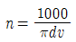
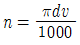
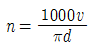
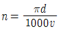
(정답률: 알수없음)
14. CNC장치의 일반적인 정보 흐름으로 옳은 것은?
- NC명령→제어장치→서보기구→NC가공
- 서보기구→NC명령→제어장치→NC가공
- 제어장치→NC명령→서보기구→NC가공
- 서보기구→제어장치→NC명령→NC가공
(정답률: 알수없음)
15. 드릴작업할 때 절삭속도 25m/min, 드릴지름 22mm, 이송 0.1mm/rev, 드릴 끝의 원추높이가 6mm일 경우 깊이 100mm인 구멍을 뚫는 때 소요시간은 약 몇 분인가?
- 8.76
- 6.43
- 4.72
- 2.93
(정답률: 알수없음)
16. 연삭 중 어느 정도 숫돌입자가 마멸되면 결합제의 결합도가 저항에 견디지 못하고 숫돌에서 탈락하여 새로운 날로 바뀌는 것이 숫돌의 특징이다. 이러한 현상을 무엇이라고 하는가?
- 로딩
- 트루잉
- 자생작용
- 글레이징
(정답률: 알수없음)
17. 그림과 같은 사인바의 H값을 구하는 공식은?
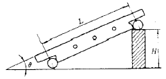
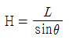
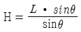
- H=Lㆍsinθ
- H=2(Lㆍsinθ)
(정답률: 알수없음)
18. 다음 중 명국식 선반 베드의 단면 형상은?
- 산형
- 평형
- 절충형
- 별형
(정답률: 알수없음)
19. 연삭 작업에서 연삭 숫돌의 입자가 무디어 지거나 눈 메움이 생기면 연삭 능력이 저하되므로 숫돌의 예리한 날이 나타나도록 가공하는 작업을 무엇이라 하는가?
- 시닝
- 드레싱
- 글레이징
- 로딩
(정답률: 알수없음)
20. 다음 중 금긋기 작업 공구로 가장 거리가 먼 것은?
- 서피스게이지
- 콤파스
- V블록
- 광선정반
(정답률: 알수없음)
2과목: 기계제도 및 기초공학
21. 질량이 5kg인 정지하고 있는 물체에 힘을 가하여 5초 동안 속도가 15m/s가 되었다면 이때 가한 힘의 크기는?
- 9N
- 12N
- 15N
- 20N
(정답률: 알수없음)
22. 다음 SI 단위계의 유도단위 중 동력의 단위는?
- N
- Pa
- J
- W
(정답률: 알수없음)
23. 실린더 내경이 20mm인 실린더를 사용하여 65kgf의 힘을 발생시키려면 약 얼마의 압력(kgf/cm2)이 필요한가?
- 3.3kgf/cm2
- 16.3kgf/cm2
- 20.7kgf/cm2
- 32.5kgf/cm2
(정답률: 알수없음)
24. 속도-변위-시간에 대한 설명 중 잘못 된 것은?
- 관측자가 본 물체의 속도를 상대속도라 한다.
- 변위-시간 그래프에서 그래프의 면적은 이동거리를 의미한다.
- 속도-시간 그래프에서 그래프의 면적은 이동거리를 의미한다.
- 속도-시간 그래프에서 그래프의 기울기는 가속도를 의미한다.
(정답률: 알수없음)
25. 다음 그림과 같은 수평방향의 성분력 F1과 수직방향의 성분력 F2의 합력의 크기 F를 피타고라스 정리를 이용해 구한 식은? (단, F1=Fcosθ, F2=Fcosθ이다.)
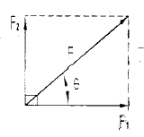
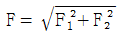
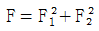
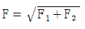
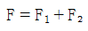
(정답률: 알수없음)
26. 그림과 같이 100N의 물체를 단면적 5mm2의 강선으로 매달았을 때 AB쪽에 발생하는 장력(F1)과 응력의 크기는?
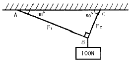
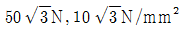
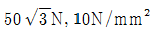
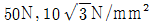
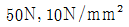
(정답률: 알수없음)
27. 그림과 같이 직경이 d인 원형 축에 접선력 P가 작용할 때 토크(T)를 나타내는 식으로 옳은 것은?
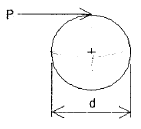
- T=Pㆍd
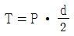
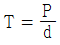
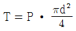
(정답률: 알수없음)
28. 저항값이 30[Ω]인 어떤 금속선에 흐르는 2[A]이면 가해지는 전압[V]은?
- 0.1
- 10
- 60
- 110
(정답률: 알수없음)
29. 그림과 같은 저항 회로에서 R1=1Ω, R2=4Ω, R3=1Ω, R4=4Ω의 저항이 존재할 때, a-b 사이의 합성 저항 R[Ω]은?
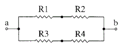
- 2.5
- 5
- 1/5
- 2/5
(정답률: 알수없음)
30. 한 물체가 다른 물체에 힘을 작용하면 힘을 받은 물체는 힘을 작용하는 물체에 대하여 크기가 같고 방향이 반대인 힘을 작용시킨다는 운동의 법칙은?
- 관성의 법칙
- 힘과 가속도의 법칙
- 작용 반작용의 법칙
- 중력 가속도의 법칙
(정답률: 알수없음)
31. 다음의 설명이 가장 적합한 것은?
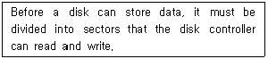
- Booting
- Backup
- File store
- Formatting
(정답률: 알수없음)
32. “윈도 98”의 탐색기에서 이웃하는 파일들을 선택할 때 사용하는 키와 이웃하지 않는 파일들을 선택할 때 사용하는 키의 나열이 순서적으로 옳은 것은?
- Ctrl, Alt
- Shift, Alt
- Alt, Ctrl
- Shift, Ctrl
(정답률: 알수없음)
33. 다음은 무엇을 설명하고 있는가?
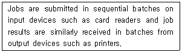
- Interactive
- Real-time
- Print processing
- Batch processing
(정답률: 알수없음)
34. 다중 프로그래밍 환경에서 하나 또는 그 이상의 프로세서가 가능하지 못한 특정 사건(Event)을 무한정 기다리는 상태를 무엇이라 하는가?
- Swapping
- Overlay
- Pipelining
- Dead Lock
(정답률: 알수없음)
35. 단말 장치 사용자가 일정한 시간 간격(Time Slice)동안 CPU를 사용함으로써 단독으로 중앙처리장치를 이용하는 것과 같은 효과를 가지는 시스템은?
- 시분할 시스템
- 다중프로그래밍 시스템
- 일괄 처리 시스템
- 분산 처리 시스템
(정답률: 알수없음)
36. “윈도 98”에서 한 번의 마우스 조작만으로 현재 실행 중인 응용프로그램 사이를 오가며 작업할 수 있는 환경을 제공하는 것은?
- 바탕화면
- 내 컴퓨터
- 시작 버튼
- 작업 표시줄
(정답률: 알수없음)
37. “윈도 98”환경에서 여러 개의 프로그램을 동시에 작업하는 것을 무엇이라 하는가?
- 멀티 유저
- 멀티 태스킹
- 멀티 스케줄링
- 멀티 컨트롤
(정답률: 알수없음)
38. “윈도 98”에서 데이터를 복사하거나 오려둘 때, 그 데이터를 임시로 기억하고 있는 장소는?
- 편집기
- 클립보드
- 문서
- 아이콘
(정답률: 알수없음)
39. 운영체제의 기능상 분류에서 처리 프로그램(Processing Program)에 해당하지 않는 것은?
- 언어 변역 프로그램
- 작업 관리 프로그램
- 서비스 프로그램
- 사용자 프로그램
(정답률: 알수없음)
40. “윈도 98”에서 사용자를 변경하려면 시작 단추에 있는 어떤 메뉴를 클릭하는가?
- 실행
- 프로그램
- 설정
- 로그오프
(정답률: 알수없음)
3과목: 자동제어
41. 제어계의 제어량에 따른 분류 중 위치 또는 각도와 같은 제어량을 제어하는 장치는 어떤 제어에 해당하는가?
- 서보기구제어
- 프로세스제어
- 자동조정
- PID제어
(정답률: 알수없음)
42. 다음 블록선도의 전달함수는?
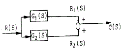
- C(S)=[G1(S)ㆍG2(S)]R(S)
- C(S)=G1(S)+G2(S)
- C(S)=G1(S)ㆍG2(S)
- C(S)=[G1(S)+G2(S)]R(S)
(정답률: 알수없음)
43. 스테핑 모터의 동작과 관련된 설명으로 틀린 것은?
- 구동회로에 주어지는 입력펄스 1개에 대해 소저으이 각도만큼 회전시키고, 그 이상 입력이 없는 경우는 정지위치를 유지한다.
- 회전각도는 입력 펄스의 수에 반비례 한다.
- 회전속도는 입력 펄스의 주파수에 비례 한다.
- 펄스를 부여하는 방식에 따라 급속하고 빈번하게 기동, 정지가 가능하다.
(정답률: 알수없음)
44. CPU와 외부 장치 간에 데이터를 전송하는데 사용되는 데이터의 입ㆍ출력창구는?
- I/O port
- RAM
- Memory
- ROM
(정답률: 알수없음)
45. PLC 입력부의 절연방법이 아닌 것은?
- 리드 릴레이
- 트랜스 포머
- 포토 커플러
- 발광 다이오드
(정답률: 알수없음)
46. 다음 중 유압장치의 특징이 아닌 것은?
- 자동 제어가 가능하다.
- 입력에 대한 출력의 응답이 빠르다.
- 무단변속이 불가능하다.
- 원격 제어가 가능하다.
(정답률: 알수없음)
47. 대부분의 PLC에서 ADD 명령의 용도는?
- 10진수로 보정한 후 곱한다.
- 레지스터 내용을 더한다.
- 파일을 더한다.
- 직접 곱한다.
(정답률: 알수없음)
48. PLC의 주변기기를 사용하여 프로그램을 메모리에 기억시키는 것을 무엇이라고 하는가?
- 코딩(coding)
- 디버그(debug)
- 로딩(loading)
- 메모리 할당
(정답률: 알수없음)
49. 10t5의 라플라스 변환은?
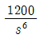
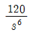
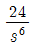
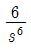
(정답률: 알수없음)
50. 마이크로컴퓨터 입력 인터페이스에 관한 설명 중 틀린 것은?
- 마이크로컴퓨터에 접속하는 입력신호는 아날로그 신호와 디지털 신호로 크게 분류된다.
- 아날로그 신호는 각종 센서나 트랜스듀서 혹은 측정기기로부터의 신호이다.
- 마이크로컴퓨터에 디지털 신호를 넣으려면 D-A 변환기를 통해서 아날로그 신호를 고쳐서 입력해야 한다.
- RS-232C와 같이 규격이 정해져 있는 것은 전용 레벨변환 IC를 사용한다.
(정답률: 알수없음)
51. PLC 입ㆍ출력 장치의 역할과 가장 거리가 먼 것은?
- 잡음 제어
- 절연 결합
- 기억 선택
- 신호 레벨 변환
(정답률: 알수없음)
52. 다음 기호에 알맞은 회로는?
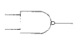
- AND
- OR
- NAND
- NOR
(정답률: 알수없음)
53. 순차 제어시스템과 되먹임 제어시스템의 차이점은?
- 조절부
- 조작부
- 출력부
- 비교부
(정답률: 알수없음)
54. 정상 편차를 0으로 하면서 제어 동작을 빠르게 하는 동작은?
- 비례 동작
- 비례 미분 동작
- 비례 적분 동작
- 비례 적분 미분 동작
(정답률: 알수없음)
55. 수치 제어(NC) 기계에서 수치지령의 신호 체계는?
- 펄스
- 압력
- 전압
- 저항
(정답률: 알수없음)
56. 그림의 PLC래더도를 논리식으로 올바르게 표현한 것은?
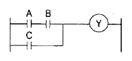
- (AㆍB)+C=Y
- (A+B)ㆍC=Y
- (A+B)+C=Y
- (AㆍB)ㆍC=Y
(정답률: 알수없음)
57. 다음 그림과 같은 제어요소의 블록선도로 맞는 것은?
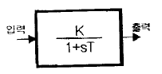
- 비례요소
- 미분요소
- 적분요소
- 1차 지연요소
(정답률: 알수없음)
58. 일반적으로 PLC 본체의 구성에 포함되지 않는 것은?
- 전원부
- CPU
- 입출력부
- 프로그램 로더
(정답률: 알수없음)
59. 릴레이 제어와 비교한 PLC 제어의 특징이 아닌 것은?
- 시스템 확장 및 유지보수가 용이하다.
- 산술, 논리연산이 가능하다.
- 컴퓨터 등과 같은 외부 장치와 통신이 가능하다.
- 수정, 변경은 릴레이 제어방식보다 어렵다.
(정답률: 알수없음)
60. 2진수 1011의 1의 보수는?
- 0101
- 0100
- 1110
- 0110
(정답률: 알수없음)
4과목: 메카트로닉스
61. 다음 중 자동화를 추진하는 목적과 관계가 없는 것은?
- 품질의 고급화
- 생산성의 향상
- 이익의 극대화
- 제품의 균일화
(정답률: 알수없음)
62. 다음의 선도 중 액추에이터의 동작을 알 수 없는 것은?
- 변위 – 단계선도
- 기능챠트
- PFC(Program Flow Chart)
- 제어선도
(정답률: 알수없음)
63. 초음파 선서의 응용 분야가 아닌 것은?
- 탱크나 하천의 액면 수위
- 어군탐지
- 장애물 감지 장치
- 제품의 무게 측정 장치
(정답률: 알수없음)
64. 다음은 자동화의 5대 요소를 나열한 것이다. 해당되지 않는 것은?
- 센서
- 프로세서
- 최종제어요소
- 네트워크
(정답률: 알수없음)
65. 압축공기를 날개차에 불어넣어 속도와 압력에너지를 회전 운동으로 변환시켜 회전력을 주는 모터는?
- 기어모터
- 터빈형모터
- 피스톤모터
- 압축형모터
(정답률: 알수없음)
66. 다음 논리 회로의 연산 결과를 부울식으로 나타내면 어떻게 되는가?
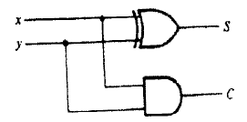
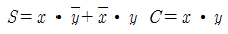
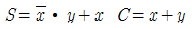
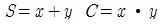
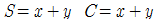
(정답률: 알수없음)
67. PLC의 입출력 모듈에서 절연회로로 사용되지 않는 것은?
- 포토 커플러
- 트랜스 포머
- 리드 릴레이
- 트라이액
(정답률: 알수없음)
68. 공압시스템에서 다음과 같은 고장의 원인은 무엇인가?
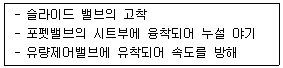
- 공급유량부족으로 인한 고장
- 수분으로 인한 고장
- 이물질로 인한 고장
- 부품의 노화로 인한 고장
(정답률: 알수없음)
69. 유압 복동 실린더 중에서 피스톤측 면적 : 피스톤 로드측 면적=2:1인 실린더로서 피스톤의 전진속도가 후진속도의 1/2배인 것은?
- 차동실린더
- 양로드 실린더
- 쿠션 내장형실린더
- 탠덤실린더
(정답률: 알수없음)
70. 두 개의 맞물린 기어에 압축공기를 공급하여 토크도 얻으며 정ㆍ역회전이 가능한 공압 모터는?
- 기어모터
- 베인모터
- 피스톤모터
- 요동액추에이터
(정답률: 알수없음)
71. 자동화 시스템의 보수관리의 목적에 적합한 것은?
- 자동화시스템 보수관리는 복잡하고 귀찮아서 고장의 배제와 수리를 하지 않고 전체를 교환한다.
- 자동화시스템은 항상 최상의 상태로 유지해야 하나 교환 및 수리를 위해 예산이 수반되면 보수를 늦춘다.
- 자동화시스템을 항상 최상의 상태로 유지하고, 고장의 배제와 수리를 신속하고, 확실하게 한다.
- 자동화시스템을 항상 최상의 상태로 유지하나, 내용년수가 짧아지며 유지비가 많이 들면 보수하지 않는다.
(정답률: 알수없음)
72. 다음 그림에서 입력신호가 증폭되어 축력 신호가 될 때 증폭은 몇 배 인가?
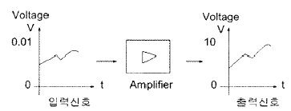
- 10배
- 100배
- 1000배
- 10000배
(정답률: 알수없음)
73. 다음은 서미스터에 대한 설명이다. 맞지 않는 것은?
- 온도변화를 전압으로 출력한다.
- NTC는 부의 온도계수를 갖는다.
- PTC는 주로 온도스위치로 사용한다.
- CTR은 서미스터의 한 종류이다.
(정답률: 알수없음)
74. 설비의 효율화에 악영향을 미치는 로스 중 속도 로스에 속하는 것은?
- 고장 정지 로스
- 작업준비/조정 로스
- 공전/순간 정지 로스
- 초기 유동 관리 수율 로스
(정답률: 알수없음)
75. 되먹임 제어계(feedback control system)의 장점이 아닌 것은?
- 전체 제어계는 항상 안정하다.
- 목표값에 정확히 도달할 수 있다.
- 제어계의 특성을 향상시킬 수 있다.
- 외부조건 변화에 대한 영향을 줄일 수 있다.
(정답률: 알수없음)
76. 유압 선형 액추에이터 설명 중 틀린 것은?
- 압축성 유체를 사용한다.
- 정밀한 속도제어가 가능하다.
- 온도변화에 따라 유체의 점도변화가 심하다.
- 큰 힘을 낼 수 가 있다.
(정답률: 알수없음)
77. 다음 중 선도에 대한 설명으로 틀린 것은?
- 기능선도: 논리제어 문제를 표시하는 적절한 방법이다.
- PFC: 상업용, 기술용으로 논리순서를 표현하는 방법 중 가장 광범위하게 사용된다.
- 래더 다이어그램: 릴레이 시퀀스 제어 회로 표시에 이용된다.
- 논리도: AND, OR, NOT, 플립플롭 등의 논리제어 형태로 표시된다.
(정답률: 알수없음)
78. 실제의 시간과 관계된 신호에 의하여 제어가 행해지는 제어계는?
- 비동기제어계
- 동기제어계
- 논리제어계
- 시퀀스제어계
(정답률: 알수없음)
79. 사람의 감각 기관과 센서를 대비한 것으로 잘못된 것은?
- 눈 - 광 센서
- 귀 – 음향 센서
- 피부 – 압력 센서
- 혀 – 자기 센서
(정답률: 알수없음)
80. 직류전동기 과열의 원인이 아닌 것은?
- 전동기 과부하
- 퓨즈의 융단
- 저항요소의 단락
- 접촉자의 단락
(정답률: 알수없음)